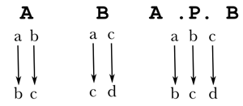

Regular expression operators
Concatenation (X Y)
The language or relation X concatenated with Y. The operator is not overtly signaled by spacing, etc., and two adjacent regular expressions will be concatenated regardless of white space when found at the level of precedence of the concatenation operator by the regular expression parser.
Restrictions: none
Kleene star (X*)
Zero or more iterations of X.
Restrictions: none
Kleene plus (X+)
One or more iterations of X. Equivalent to [X X*].
Restrictions: none
Iteration operators
In addition to the Kleene closures, there are a number of m-n-ary iteration operators:
| Iteration operators | |
| X^n | exactly n iterations of X |
| X^>n | at least n iterations of X |
| X^<n | less than n iterations of X |
| X^{m,n} | between m and n iterations of X |
Restrictions: none
Union (X | Y)
Returns the union (disjunction) of FSMs X and Y.
Notational variants: X ∪ Y (UNION, U+222A), X ∨ Y (LOGICAL OR, U+2228)
Restrictions: none
Intersection (X & Y)
Returns the intersection (conjunction) of FSMs X and Y.
Notational variants: X ∩ Y (UNION, U+2229), X ∧ Y (LOGICAL AND, U+2227)
Restrictions: foma always calculates the path intersection of two FSMs. This may not be the logical intersection of the relations X and Y if X and Y are transducers and not automata.
Subtraction (X - Y)
Returns the difference of FSMs X and Y.
Restrictions: foma always calculates the path subtraction of two FSMs. This may not be the logical difference of the relations X and Y if X and Y are transducers and not automata.
Complement (~X)
Calculates the complement set of X.
Notational variants: ¬X (NOT SIGN, U+00AC)
Restrictions: undefined for non-identity transducers.
Composition (X .o. Y)
Calculates the composite transducer of relations X and Y.
Notational variants: X ∘ Y (RING OPERATOR, U+2218)
Restrictions: none
Substitution (`[X,Y,Z])
Substitutes all occurrences of symbol Y in FSM X by Z.
Restrictions: none
Optionality (X)
Defines the language or relation that contains zero or one iteration of X. Equivalent to [X | 0].
Restrictions: none
Domain extraction (X.u)
Extracts the domain from a FSM.
Notational variants: X₁ (SUBSCRIPT ONE, U+2081)
Restrictions: none
Range exctraction (X.l)
Extracts the range from a FSM.
Notational variants: X₂ (SUBSCRIPT TWO, U+2082)
Restrictions: none
Inversion (X.i)
Inverts a FSM.
Notational variants: X⁻¹ (SUPERSCRIPT MINUS SUPERSCRIPT ONE, U+207B U+00B9)
Restrictions: none
Term negation (\X)
Any single symbol except X. Equivalent to [? - X].
Restrictions: see subtraction
Cross product (X:Y)
Calculates the cross product (or Cartesian product) of FSMs X and Y producing a transducer representing the relation where every string in X is paired with every string in Y.
Notational variants: X .x. Y, X × Y (MULTIPLICATION SIGN, U+00D7), both with lower precedence than :
Restrictions: undefined if X and Y are not both automata.
Ignore (X/Y)
Denotes the language where instances of Y are arbitrarily interspersed in the language X.
Restrictions: not well defined for transducers.
Ignore inside (X./.Y)
Denotes the language where instances of Y are arbitrarily interspersed in the language X, except that the first symbol and last symbol belong to X.
Restrictions: not well-defined for transducers.
Left quotient (X\\\Y)
The operation X\\\Y is defined as: {w | ∃x((x ∈ X) ∧ (xw ∈ Y )}. Informally: the set of suffixes one can add to strings in X to get strings from Y.
Restrictions: not well-defined for transducers.
Right quotient (X///Y)
The operation X///Y is defined as: {w | ∃x((x ∈ Y ) ∧ (wx ∈ X)}. Informally, this is the set of prefixes one can add to Y to get strings from X.
Restrictions: not well-defined for transducers.
Precedes (X<Y)
Denotes the languages where every string from X precedes every string from Y. The precedence need not be immediate.
Restrictions: not well-defined for transducers.
Follows (X>Y)
Denotes the languages where every string from X follows every string from Y. The precedence need not be immediate.
Restrictions: not well-defined for transducers.
Shuffle (X <> Y)
The shuffle (or asynchronous) product of X and Y, i.e. the set of words formed by any method of ‘shuffling’ the contents of X with Y. The shuffle is not perfect.
Notational variants: X ∥ Y (PARALLEL TO, U+2225)
Restrictions: none
Containment operators ($X, $.X, $?X)
The operator $X denotes the language that contains a substring drawn from the language X. This is equivalent to [?* X ?*]. The operator $.X denotes the language that contains exactly one substring drawn from the language X, while $?X denotes the language that contains at most one substring from X.
Restrictions: $.X and $?X are not well-defined for transducers.
Context restriction (X => Y1 Z1, ..., Yn Zn)
Denotes the language where every instance of a string from X is surrounded by string from some pair Yi and Zi on the left and right, respectively.
Restrictions: not well-defined for transducers.
Priority unions (X .P. Y, X .p. Y)
Th upper-side priority union X .P. Y denotes the union of relations X and Y, with relations in Y discarded if a relation in X have the same input (domain). Equivalent to [X | [ ̃[X.u] .o. Y]]. The lower-side priority union is similar, except a relation in X has precedence over a relation in Y based on the range, not the domain.
Restrictions: none

Lenient composition (X .O. Y)
The 'lenient' composition of X with Y. For those relations where strings in the domain of Y does not include some possible string from the range of X, the relation X is not composed with Y. Equivalent to [X .o. Y] .P. Y. See Karttunen (1998) for details and usage.
Logical connectives (X → Y, X ↔ Y)
The implication operator and the biconditional are shorthands whose definitions are as follows:
- X → Y is equivalent to ~X | Y
- X ↔ Y is equivalent to [~X | Y] & [~Y | X]
Flag elimination (X.f)
Eliminates all flag diacritics in X and calculates the equivalent FSM without flags. If no flags are present, no action is taken.
Restrictions: none
Replacement operators
The most general format of a replacement rule is
A -> B || L _ R ;
which dictates the replacement of sequences A with B when occurring between L and R. The replacement arrow (->) can be of various types indicating different replacement strategies, optional replacement (->), longest-leftmost @->, shortest-leftmost @>, etc. The directionality constraint || can also vary depending on the application.
All replacement operators allow context specification through one of the directionality markers.
The directionality constraint DIR can be one of:
| DIR | Interpretation |
| || | left and right contexts hold on input side |
| \\ | left holds on input side, right holds on output side |
| // | left holds on output side, right holds on input side |
| \/ | left holds on output side, right holds on output side |
The following replacement operators are available:
| Operator | Type |
| -> | Unconditional replacement |
| <- | Unconditional inverse replacement |
| <-> | Unconditional replacement and inverse replacement |
| (->) | Optional replacement |
| (<-) | Optional inverse replacement |
| (<->) | Optional replacement and inverse replacement |
| @-> | Left-to-right longest-match replacement |
| @> | Left-to-right shortest-match replacement |
| <-@ | Left-to-right longest-match inverse replacement |
| <@ | Left-to-right shortest-match inverse replacement |
| (@->) | Optional left-to-right longest-match replacement |
| (@>) | Optional left-to-right shortest-match replacement |
| (<-@) | Optional left-to-right longest-match inverse replacement |
| (<@) | Optional left-to-right shortest-match replacement |
Markup (...)
The LHS/RHS of a replacement rule may also be of the format
X -> Y ... Z ;
in which case both Y and Z are inserted around instances of X. Y or Z may be omitted and all contextual specifications are available.
Epsilon modifier [. .]
The LHS of a rule may be wrapped in the epsilon modifier, in which case any epsilons on the LHS get a special interpretation, where only one empty string is assumed to exists between each symbol in the input string. For example, the rule:
[.a*.] -> x
will produce a transducer that maps the input string a unambiguously to xxx.
Also, [..] will simply produce a rule that inserts one instance of the RHS whenever the context is matched:
[..] -> x
will map aaa to xaxaxax.
Multiple contexts
Several possible contexts can be specified by separating the contexts with a comma.
Example:
a -> b || c _ d , e _ f ;
Multiple left-hand sides
Several left hand sides of a rule can be combined with a comma. In such a rule, the context specification aplies to all left-hand sides.
Example:
a -> b , b -> a || c _ d ;
Parallel rules (,,)
Separate rules can be compiled in parallel by separating each individual rules with a double comma (,,), i.e.
Rule1 ,, Rule2 ,, ... ,, RuleN ;
Transducers with backreferences
Rules of the format
T -> || L _ R ;
are also possible. Here, T is usually a transducer. The contexts can be omitted, and several contexts can be specified as with ordinary rules, and the arrow can take any of the standard arrow types.
The semantics of the rule is that the strings from the input side of T are replaced with T. This allows for a more general specification of chunking and insertion rules.
For example, the rule
0:%[ Chunk 0:%] @-> ;
is identical to the chunking rule
Chunk @-> %{ ... %}This type of rule allows for replacements that are otherwise hard to define. Gerdemann and van Noord(1999), who proposed the rule semantics, provide the following example: suppose we have a transducer of word-sequence/abbreviation pairs such as
define Abbr {nondeterministic finite automaton}:{NFA} | {deterministic finite automaton}:{DFA} ;Now, if we wanted to convert all known word sequences into the known acronyms whenever they occur between <abbr> ... </abbr> tags, we can issue the rule:
Abbr -> || {<abbr>} _ {</abbr>}which would for example transduce <abbr>nondeterministic finite automaton</abbr> to <abbr>NFA</abbr>.
Word-boundary marker (.#.)
The special word-boundary marker may be used in context specification of both the context restriction operator as well as replacement rules.
Example:
a => _ c | .#. ;
specifies the language where a must always be followed by c or a word boundary.
The word-boundary marker has no special meaning in other regular expression constructs; however, any .#.-symbols found in a context specification will always be interpreted as a word boundary, and the symbol is removed from the alphabet at the end of replacement rule or context restriction compilation.
Built-in functions
All built-in regular expression function names begin with an underscore (_).
_isunambiguous(X)
Returns the empty string (ε) if X is an unambiguous transducer, or the empty language (∅) otherwise.
_isidentity(X)
Returns the empty string (ε) if X is an identity transducer, or the empty language (∅) otherwise.
_isfunctional(X)
Returns the empty string (ε) if X is a functional (single-valued) transducer, or the empty language (∅) otherwise.
_notid(X)
Returns an automaton containing all the words in X that do not map to themselves (are not in an identity relation).
_lm(X)
Returns the letter machine equivalent to X. A letter machine is a FSM where every transition contains maximally one UTF-8 symbol.
_loweruniq(X)
Modifies X in such a way that each input word maps to a unique output word. Lower-side symbols are replaced by arbitrary symbols from the alphabet. In case the output side cannot be made unique using only existing symbols in the alphabet, the alphabet is extended with new random symbols to achieve uniqueness.
_allfinal(X)
Returns the same FSM as X, with the exception that all states are marked as final states.
_unambpart(X)
Returns an FSM containing only those paths in X that are unambiguous. That is, a mapping in X is preserved only if its input string has a unique path through the transducer.
Example:
_unambpart(a:b | a:c | b:c);
returns a transducer equivalent to
b:c
since b:c is the only unambiguous path with respect to the input side.
_ambpart(X)
Returns an FSM containing only those paths in X that are ambiguous. That is, a mapping in X is preserved only if its input string has at least two paths through the transducer.
Example:
_ambpart(a:b | a:c | b:c);
returns a transducer equivalent to
a:b | a:c
That is, the path containing b:c is removes since it is unambiguous.
_ambdom(X)
Returns an automaton containing all words in the domain of X that yield an ambiguous path through X.
_ambdom(a:b | a:c | b:c);
returns a an automaton equivalent to
a
_eq(X,L,R)
Filters from the output side of X all those strings where some substrings occurring between the delimiters L and R are different.
Example:
Consider the language %< a* b %> %< a b* %>, which contains an infinite number of strings:
<b><a> <b><ab> <ab><a> <ab><ab> <ab><abbb> ...
However, only one of the strings in this language has identical substrings between all instances of < and >, namely <ab><ab>. Hence, the language containing the single string
<ab><ab>
is produced by the regular expression:
_eq(%< a* b %> %< a b* %> , %< , %>) ;
This operation is mostly used to model reduplication in natural language lexicons. Usually, the bare words to be reduplicated are marked with delimiters, say < and >, after which one can produce the reduplicated forms. For example:
define Lexicon {cat}|{dog}|{horse};
define RLexicon %< Lexicon %> (%- %< \[%<|%>]+ %>);
regex _eq(RLexicon, %<, %>) .o. %<|%> -> 0 ;and now we get:
foma[1]: lower-words cat cat-cat dog dog-dog horse horse-horse
_flatten(X, EPS)
This function converts a transducer into an automaton where input-output symbols are interleaved. Since epsilons cannot be retained, they need to be converted to the EPS symbol. For example:
regex _flatten(a:0 0:b c, "EPS");
produces an automaton which accepts only the word:
a EPS EPS b c c
_addloop(L, a:b)
This function adds self-loops to all states in L with the symbol pair a:b. a or b may be 0.
_addfinalloop(L, a:b)
Like _addloop(L, a:b) but only adds loops at final states.
_addnonfinalloop(L, a:b)
Like _addloop(L, a:b) but only adds loops at nonfinal states.
_leftrewr(L, a:b)
This is a fast low-level single-symbol rewrite with left contexts only. It is sometimes useful for constructing complex transducers faster than with the generic operations.
_leftrewr(L, a:b)
is semantically equivalent to
a -> b || .#. L _
while
_leftrewr(?* L, a:b)
is equivalent to:
a -> b || L _
_marktail(L, a:b)
The function converts L into a single-symbol insertion transducer. As the above, this is a fast state/arc manipulation function that produces a transducer equivalent to a certain operation. In this case:
_marktail(?* L, 0:x)
is equivalent to
~$x .o. [..] -> x || L _ ;
and
_marktail(?* R.r, 0:x).r
is equivalent to
~$x .o. [..] -> x || _ R
First-order logic over substrings (experimental)
SUPPORT FOR FIRST-ORDER LOGIC DISCONTINUED from 0.9.16 onward
Foma also has a compiler for a type of first-order logic over substrings. Statements in the first-order logic must begin with a parenthesized quantification of a variable. When compiling statements in first-order logic, parenthesis symbols ( and ) lose their optionality meaning and work as grouping symbols.
See the article on first-order logic for details.
| Connectives | |
| ∨ | Disjunction |
| ∧ | Conjunction |
| → | Implication |
| ↔ | Biconditional |
| ¬ | Negation |
| Quantifiers | Type |
| ∀ | universal |
| ∃ | existential |
| Available predicates | |
| x ∈ L | the substring x is a member of language L |
| _S(x,L) | the substring x is followed immediately by a substring from L |
| x = y | the position of substrings x and y are identical |
| x ≠ y | equivalent to (x = y) |
| x ≺ y | substring x precedes y |
| x ≻ y | substring x succeeds y |
| x ≤ y | substring x precedes or is in equal position with y |
| x ≥ y | substring x succeeds or is in equal position with y |
Examples:
regex (∃x)(∃y)(x ∈ a ∧ y ∈ a ∧ x ≠ y);
- denotes the languages that contains two instances of the string a, in different positions.
regex (∃x)(x ∈ a) & (∃y)(y ∈ b);
- denotes the language that contains both a substring a and a substring b.
regex (∃x)(x ∈ L ∧ ¬(∃y)(y ∈ L ∧ ¬(x = y) ) );
- the language where only exactly one substring from the language L is present. Equivalent to $.L.
regex (∀y)( (y ∈ x) → (_S(a,y) ∧ _S(y,b) ) ∨ (_S(c,y) ∧ _S(y,d) ) );
- the language where each instance of the string x is surrounded by a and b, or c and d. Equivalent to:
regex x => a _ b , c _ d;
Operator precedence
The following table gives the operator precedence of all regular expression operators, from highest to lowest.
| Operator precedence |
| \ ` |
| : |
| + * %%^%% .l .u .i .f .r |
| ~ $ $. $? |
| / /// \\\ /\/ |
| (concatenation) |
| > < |
| | & - .P. .p. |
| => -> (->) @-> etc. |
| <> |
| .x. .o. .O. |
Reserved symbols
The following is a table of all reserved symbols in foma regular expressions, showing the character, the official Unicode character name, and its Code Point. These need to be escaped (by % or enclosing a string in quotes) for their literal meaning in regular expressions.
| Character | Character Name | Code point |
| ! | EXCLAMATION MARK | U+0021 |
| " | QUOTATION MARK | U+0022 |
| # | NUMBER SIGN | U+0023 |
| $ | DOLLAR SIGN | U+0024 |
| % | PERCENT SIGN | U+0025 |
| & | AMPERSAND | U+0026 |
| ( | LEFT PARENTHESIS | U+0028 |
| ) | RIGHT PARENTHESIS | U+0029 |
| * | ASTERISK | U+002A |
| + | PLUS SIGN | U+002B |
| , | COMMA | U+002C |
| - | HYPHEN-MINUS | U+002D |
| . | FULL STOP | U+002E |
| / | SOLIDUS | U+002F |
| 0 | DIGIT ZERO | U+0030 |
| : | COLON | U+003A |
| ; | SEMICOLON | U+003B |
| < | LESS-THAN SIGN | U+003C |
| > | GREATER-THAN SIGN | U+003E |
| ? | QUESTION MARK | U+003F |
| [ | LEFT SQUARE BRACKET | U+005B |
| \ | REVERSE SOLIDUS | U+005C |
| ] | RIGHT SQUARE BRACKET | U+005D |
| ^ | CIRCUMFLEX ACCENT | U+005E |
| _ | LOW LINE | U+005F |
| ` | GRAVE ACCENT | U+0060 |
| { | LEFT CURLY BRACKET | U+007B |
| || | VERTICAL LINE | U+007C |
| } | RIGHT CURLY BRACKET | U+007D |
| ~ | TILDE | U+007E |
| ¬ | NOT SIGN | U+00AC |
| ¹ | SUPERSCRIPT ONE | U+00B9 |
| × | MULTIPLICATION SIGN | U+00D7 |
| Σ | GREEK CAPITAL LETTER SIGMA | U+03A3 |
| ε | GREEK SMALL LETTER EPSILON | U+03B5 |
| ⁻ | SUPERSCRIPT MINUS | U+207B |
| ₁ | SUBSCRIPT ONE | U+2081 |
| ₂ | SUBSCRIPT TWO | U+2082 |
| → | RIGHTWARDS ARROW | U+2192 |
| ↔ | LEFT RIGHT ARROW | U+2194 |
| ∀ | FOR ALL | U+2200 |
| ∃ | THERE EXISTS | U+2203 |
| ∅ | EMPTY SET | U+2205 |
| ∈ | ELEMENT OF | U+2208 |
| ∘ | RING OPERATOR | U+2218 |
| ∥ | PARALLEL TO | U+2225 |
| ∧ | LOGICAL AND | U+2227 |
| ∨ | LOGICAL OR | U+2228 |
| ∩ | INTERSECTION | U+2229 |
| ∪ | UNION | U+222A |
| ≤ | LESS-THAN OR EQUAL TO | U+2264 |
| ≥ | GREATER-THAN OR EQUAL TO | U+2265 |
| ≺ | PRECEDES | U+227A |
| ≻ | SUCCEEDS | U+227B |